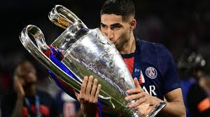
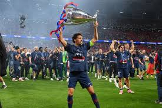
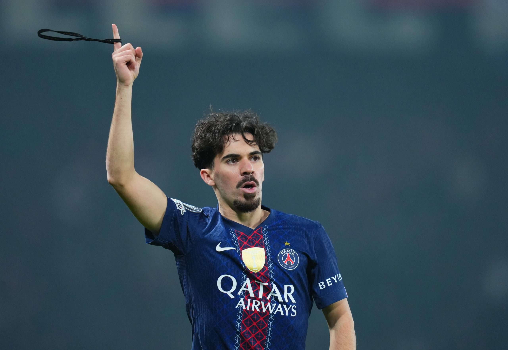
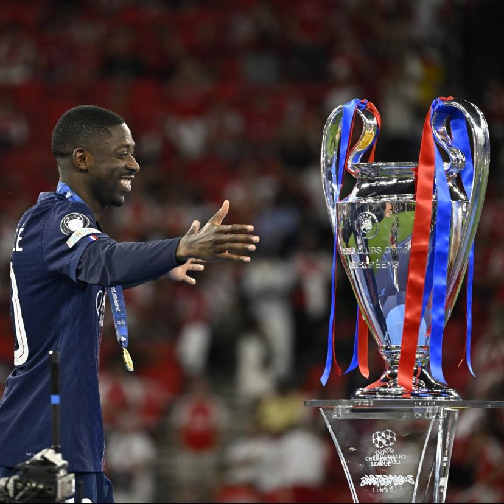
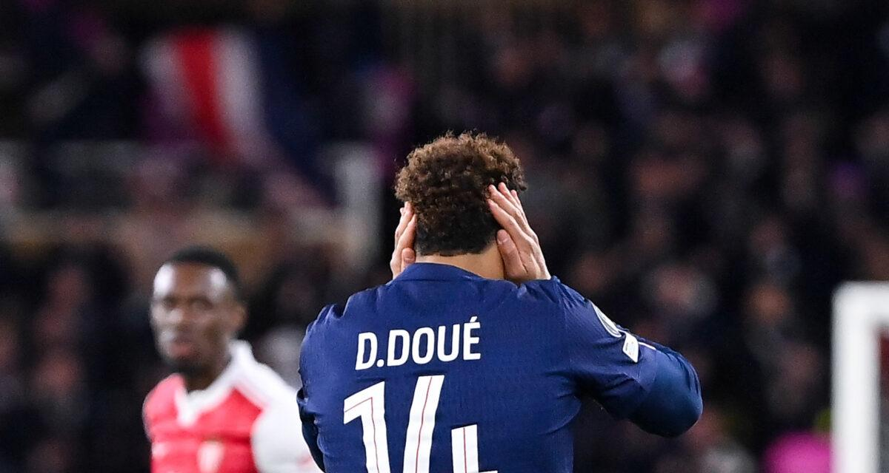

🧤 Matvey Safonov
Toujours prêt lorsque l'équipe a eu besoin de lui, Safonov a démontré un professionnalisme exemplaire tout au long de la campagne européenne. Son sérieux, sa concentration et son engagement ont contribué à la force collective du PSG. Merlin tient à saluer son implication dans cette saison historique qui a vu Paris conserver son titre de champion d'Europe.

⚡ Achraf Hakimi
Une locomotive lancée à pleine vitesse. Défenseur, ailier, créateur : Hakimi a tout fait. Ses projections offensives ont constamment déséquilibré l'adversaire et offert des situations dangereuses tout au long de la rencontre.

🛡️ Marquinhos
Le capitaine a montré l'exemple. Solide dans les duels, calme sous pression et toujours parfaitement placé, il a dirigé son arrière-garde avec l'assurance d'un véritable leader de champion d'Europe.

🎩 Vitinha
Le chef d'orchestre du milieu parisien. Son intelligence de jeu, sa maîtrise technique et sa capacité à contrôler le tempo ont permis au PSG d'imposer sa domination.

🔥 Ousmane Dembélé
Insaisissable. À chaque accélération, le stade retenait son souffle. Ses dribbles, ses changements de rythme et son activité permanente ont fait vivre un cauchemar à la défense adverse.

🌟 Désiré Doué
L'avenir du football européen. Avec une maturité impressionnante et une confiance incroyable malgré son jeune âge, il a démontré pourquoi il représente l'une des plus grandes promesses du club.